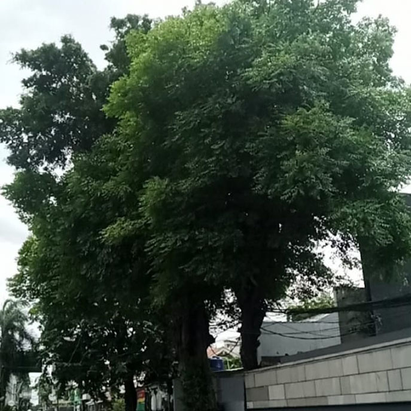

Berita Wilayah

Kelurahan Kelapa Dua Gelar Rembuk RW 2026
Tanggal, 13 Januari 2026
MediaKada | Kelurahan Kelapa Dua melaksanakan kegiatan Pra Musyawarah Perencanaan Pembangunan atau Rembuk RW pada hari Selasa, Tanggal 13 Januari 2026, bertempat di Aula Lantai 3 Kantor Kelurahan Kelapa Dua Kecamatan Kebon Jeruk Jakarta Barat, kegiatan Rembuk RW Kelurahan berlangsung dari pukul 13.00 hingga 15.30 WIB.
Rembuk RW merupakan forum tahunan yang bertujuan menjaring aspirasi, usulan, serta kebutuhan prioritas pembangunan dari masyarakat di tingkat RW secara partisipatif. Hasilnya akan dibawa ke forum Musyawarah Perencanaan Pembangunan (Musrenbang) tingkat kelurahan sebagai bahan perencanaan pembangunan daerah yang lebih tepat sasaran, meliputi bidang infrastruktur, sosial, ekonomi, dan lingkungan.
Dalam sambutannya, Lurah Kelapa Dua Elfin Ridho Putra mengingatkan para Ketua RW, RT, dan LMK agar tidak berkecil hati bila usulan belum terealisasi dalam Musrenbang. Ia mendorong agar warga tetap berupaya melalui berbagai jalur, termasuk reses Anggota Dewan.
Kegiatan ini dihadiri jajaran kelurahan seperti Sekretaris Kelurahan, Kepala Seksi Pemerintahan, Kepala Seksi Kesejahteraan Rakyat, Kepala Seksi Ekonomi dan Pembangunan, Kepala PTSP, serta Kasatpol PP. Dari unsur masyarakat hadir LMK, FKDM Kelurahan, Ketua RW, perwakilan RT, pengurus PKK, dan pendamping Musrenbang.
Sebanyak 31 usulan dari RW 01 hingga RW 08 disampaikan. Usulan terbanyak berupa pembangunan saluran drainase, disusul peningkatan penerangan jalan, pengadaan cermin jalan, dan fasilitas olahraga berupa tenis meja. Dari jumlah tersebut, ditetapkan tiga usulan prioritas dari tiap RW yang dinilai paling mendesak dan bermanfaat bagi warga.
Hasil Rembuk RW ini akan menjadi bahan utama dalam Musrenbang Kelurahan Kelapa Dua yang dijadwalkan pada April 2026. Melalui mekanisme bottom-up planning, diharapkan pembangunan fisik maupun nonfisik dapat terlaksana sesuai kebutuhan riil masyarakat Kelurahan Kelapa Dua.
(From : LMK-08 Kelapa Dua)

Peringatan Maulid Nabi Muhammad SAW di MAsjid Jami At'Tagwa